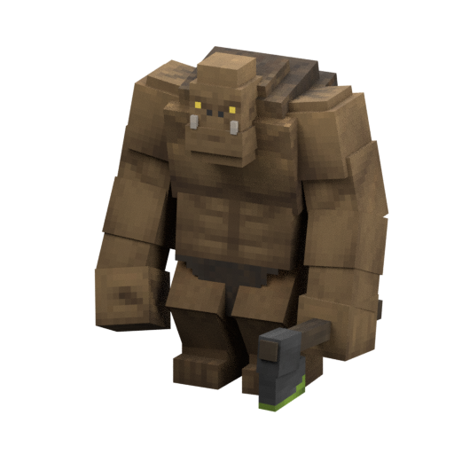

<!doctype html><html lang="en"><meta charset="utf-8"><meta name="viewport" content="width=device-width,initial-scale=1"><title>AoA • Model Observatory</title><style>
:root{color-scheme:dark;font:15px system-ui;background:#0a0d18;color:#ebf0ff}*{box-sizing:border-box}body{margin:0;display:grid;grid-template-columns:310px 1fr;min-height:100vh}aside{padding:26px;background:#101525;border-right:1px solid #27314c;height:100vh;overflow:auto}h1{font-size:25px;letter-spacing:-1px;margin:8px 0}small,.muted{color:#a7b3ce;line-height:1.6}.eyebrow{font-size:11px;letter-spacing:3px;color:#70dfdc;text-transform:uppercase}button,input,select{font:inherit;color:inherit;background:#1a233b;border:1px solid #354362;border-radius:8px;padding:10px;max-width:100%}button{cursor:pointer}button:hover{border-color:#70dfdc}input[type=search]{width:100%;margin:16px 0 8px}#list{display:grid;gap:5px;margin:12px 0}#list button{text-align:left;font-size:13px}#list button.selected{border-color:#70dfdc;background:#15383c}main{position:relative;min-width:0;padding:28px;display:flex;flex-direction:column;gap:15px}header{display:flex;justify-content:space-between;gap:20px}h2{margin:4px 0;font-size:30px}#stage{position:relative;flex:1;min-height:480px;background:radial-gradient(ellipse at 50% 65%,#253455 0,#111827 45%,#0a0e19 80%);border:1px solid #29344e;border-radius:22px;overflow:hidden}canvas{width:100%;height:100%;position:absolute;touch-action:none}#hint{position:absolute;left:20px;bottom:15px;pointer-events:none;color:#b9c7e0;font-size:12px}#status{color:#88dfd9;white-space:pre-wrap;font-size:12px;line-height:1.5}footer{font-size:12px;color:#9daac3;line-height:1.6}a{color:#87e5df}.toolbar{display:flex;gap:10px;flex-wrap:wrap}#texture{max-width:500px;font-size:12px}.badge{align-self:flex-start;white-space:nowrap;border:1px solid #344665;border-radius:20px;padding:5px 12px;font-size:12px;color:#b8c9e6}details{margin-top:20px}summary{cursor:pointer}code{font-size:11px;word-break:break-all}@media(max-width:800px){body{grid-template-columns:1fr}aside{height:auto;max-height:340px}main{padding:15px}#stage{min-height:65vh}}
</style><aside><div class="eyebrow">Enderloom × Advent of Ascension</div><h1>Model Observatory</h1><p class="muted">Explore real geometry and textures from your official AoA JAR. Nothing is uploaded.</p><button id="official" style="width:100%;margin-bottom:12px;border-color:#50b6b3">Load official 1.21.1 · 140 MB</button><small>Direct from Modrinth, SHA-512 checked. Downloads only when clicked.</small><p></p><p class="muted">Prefer ready-made references? <a href="model-turntable.html">Creature turntables</a> · <a href="block-models.html?v=1.21.1">Block models</a> · <a href="crop-states.html?v=1.21.1">Plant states</a>. These do not require opening a JAR.</p><label for="jar">Or open your local mod file</label><input id="jar" type="file" accept=".jar,.zip"><input id="search" type="search" placeholder="Find a creature or model…" aria-label="Search models"><div id="status">Choose a local JAR to begin. Local archive contents stay in this browser; official downloads happen only when requested.</div><div id="list"></div><details><summary>Scope & credits</summary><p class="muted">Advent of Ascension models and artwork are by Tslat and contributors. The opening image is a credited static example. Loaded archive models and textures remain in your browser memory; the viewer does not upload them.</p><p class="muted">This edition supports Bedrock/GeckoLib cuboid geometry and texture selection. It shows static rest poses. CPU fallback uses per-pixel depth and cutout transparency; partial transparency and custom render layers may differ from the game. Rendering sleeps when the view is idle. Java-coded legacy models, animation expressions, custom rendering layers and item/block JSON need their own adapters. A resource in a JAR does not prove it is playable or implemented by Enderloom.</p><a href="https://modrinth.com/mod/adventofascension">Official downloads</a> · <a href="https://adventofascension.fandom.com/wiki/Advent_of_Ascension_Wiki">Official wiki</a></details></aside><main><header><div><div class="eyebrow">Version-aware visual atlas</div><h2 id="name">Bring the adventure into view.</h2><small id="identity">Drag to orbit · scroll to zoom · double-click to reset</small></div><span class="badge">Local-only 3D</span></header><div id="stage"><canvas id="view" tabindex="0" role="img" aria-label="Interactive AoA model preview. Arrow keys orbit, plus or minus zoom, Home resets."></canvas><div id="hint">Actual textured geometry • Static rest pose • Independent showcase renderer</div></div><div class="toolbar"><button id="rotate">Auto-rotate</button><button id="reset">Reset view</button><button id="capture" disabled>Save preview PNG</button><select id="texture" aria-label="Texture variant"></select></div><small class="muted">Drag or focus the preview and use arrow keys to orbit; + / − zoom; Home resets. Auto-rotation is opt-in and stops when the page is hidden.</small><p class="muted"><a href="https://github.com/Herbertofury/Advent-of-Ascension/wiki/Model-Observatory-Local-Archives-and-Troubleshooting">Archive loading, controls and troubleshooting</a></p><footer id="provenance">No model loaded. Source files are read as data; no Minecraft or mod code is executed.</footer></main><script>
'use strict';const $=id=>document.getElementById(id),canvas=$('view'),gl=canvas.getContext('webgl',{alpha:true,antialias:true,preserveDrawingBuffer:true});let archive,entries=[],lang={},chosen,vertices,texture,yaw=.4,pitch=.15,zoom=1,spin=false,frame=0,token=0,cpuImage=null,cpuPixels=null,ready=false,archiveGeneration=0,archiveLabel='',officialAbort=null,captureSequence=0; const cpu=!gl?canvas.getContext('2d'):null;
const esc=s=>String(s);const status=s=>$('status').textContent=s;
function fail(e){status('Could not display this model: '+e.message);console.error(e)}
const MAX_ENTRY_BYTES=32*1024*1024;
async function readBoundedStream(stream,expected){if(!Number.isSafeInteger(expected)||expected<0||expected>MAX_ENTRY_BYTES)throw Error('Entry too large');const reader=stream.getReader(),chunks=[];let total=0;try{while(true){const part=await reader.read();if(part.done)break;total+=part.value.byteLength;if(total>expected||total>MAX_ENTRY_BYTES){await reader.cancel('ZIP length limit');throw Error('ZIP length limit exceeded')}chunks.push(part.value)}}finally{reader.releaseLock()}if(total!==expected)throw Error('ZIP length mismatch');const output=new Uint8Array(total);let offset=0;for(const chunk of chunks){output.set(chunk,offset);offset+=chunk.byteLength}return output.buffer}
class Jar{constructor(buffer){this.buffer=buffer;this.files=new Map();let d=new DataView(buffer),end=-1;for(let i=buffer.byteLength-22;i>=Math.max(0,buffer.byteLength-65557);i--)if(d.getUint32(i,true)===0x06054b50){end=i;break}if(end<0)throw Error('ZIP directory not found');let n=d.getUint16(end+10,true),p=d.getUint32(end+16,true);if(n===65535)throw Error('ZIP64 is not supported in this viewer');let decode=new TextDecoder();for(let i=0;i<n;i++){if(d.getUint32(p,true)!==0x02014b50)throw Error('Invalid ZIP directory');let len=d.getUint16(p+28,true),extra=d.getUint16(p+30,true),comment=d.getUint16(p+32,true),name=decode.decode(new Uint8Array(buffer,p+46,len));this.files.set(name,{method:d.getUint16(p+10,true),size:d.getUint32(p+24,true),compressed:d.getUint32(p+20,true),offset:d.getUint32(p+42,true),flags:d.getUint16(p+8,true)});p+=46+len+extra+comment}}
async read(name){const entry=this.files.get(name);if(!entry)throw Error('Missing '+name);if(entry.flags&1)throw Error('Encrypted ZIP entry');if(entry.size>MAX_ENTRY_BYTES)throw Error('Entry too large');const view=new DataView(this.buffer);let offset=entry.offset;if(offset+30>this.buffer.byteLength||view.getUint32(offset,true)!==0x04034b50)throw Error('Invalid ZIP entry');offset+=30+view.getUint16(offset+26,true)+view.getUint16(offset+28,true);if(offset+entry.compressed>this.buffer.byteLength)throw Error('Truncated ZIP payload');const bytes=this.buffer.slice(offset,offset+entry.compressed);if(entry.method===0){if(bytes.byteLength!==entry.size)throw Error('ZIP length mismatch');return bytes}if(entry.method!==8)throw Error('Unsupported ZIP compression');return readBoundedStream(new Blob([bytes]).stream().pipeThrough(new DecompressionStream('deflate-raw')),entry.size)}async json(name){return JSON.parse(new TextDecoder().decode(await this.read(name)))}}
function mul(a,b){let o=Array(16).fill(0);for(let r=0;r<4;r++)for(let c=0;c<4;c++)for(let k=0;k<4;k++)o[r*4+c]+=a[r*4+k]*b[k*4+c];return o}const I=()=>[1,0,0,0,0,1,0,0,0,0,1,0,0,0,0,1];function trans(p){let a=I();a[3]=p[0];a[7]=p[1];a[11]=p[2];return a}function point(m,p){return[0,1,2].map(r=>m[r*4]*p[0]+m[r*4+1]*p[1]+m[r*4+2]*p[2]+m[r*4+3])}function rot(x,y,z){let cx=Math.cos(x),sx=Math.sin(x),cy=Math.cos(y),sy=Math.sin(y),cz=Math.cos(z),sz=Math.sin(z);return mul(mul([cz,-sz,0,0,sz,cz,0,0,0,0,1,0,0,0,0,1],[cy,0,sy,0,0,1,0,0,-sy,0,cy,0,0,0,0,1]),[1,0,0,0,0,cx,-sx,0,0,sx,cx,0,0,0,0,1])}function local(d){let p=d.pivot||[0,0,0];p=[-p[0],p[1],p[2]];let r=(d.rotation||[0,0,0]).map(a=>a*Math.PI/180);return mul(mul(trans(p),rot(-r[0],-r[1],r[2])),trans(p.map(a=>-a)))}
function geometry(g){let desc=g.description,tw=desc.texture_width,th=desc.texture_height,bones=new Map(g.bones.map(b=>[b.name,b])),cache=new Map(),data=[];function bm(name,stack=[]){if(cache.has(name))return cache.get(name);if(stack.includes(name))throw Error('Cyclic bone hierarchy');let b=bones.get(name);if(!b)throw Error('Unknown parent bone');let m=local(b);if(b.parent)m=mul(bm(b.parent,[...stack,name]),m);cache.set(name,m);return m}let faces={north:[4,5,1,0],south:[6,7,3,2],west:[7,4,0,3],east:[5,6,2,1],up:[7,6,5,4],down:[0,1,2,3]};for(let b of g.bones){if(b.neverRender)continue;for(let c of b.cubes||[]){let [dx,dy,dz]=c.size,[x,y,z]=c.origin;x=-(x+dx);let inf=c.inflate??b.inflate??0;x-=inf;y-=inf;z-=inf;let X=x+dx+2*inf,Y=y+dy+2*inf,Z=z+dz+2*inf,m=mul(bm(b.name),local(c));let pts=[[x,y,z],[X,y,z],[X,y,Z],[x,y,Z],[x,Y,z],[X,Y,z],[X,Y,Z],[x,Y,Z]].map(p=>point(m,p)),uv=c.uv||[0,0],box=Array.isArray(uv),mirror=c.mirror??b.mirror??false,rects={};if(box){let [u,v]=uv;dx=Math.floor(dx);dy=Math.floor(dy);dz=Math.floor(dz);rects={west:[u+dz+dx,v+dz,dz,dy],east:[u,v+dz,dz,dy],north:[u+dz,v+dz,dx,dy],south:[u+2*dz+dx,v+dz,dx,dy],up:[u+dz,v,dx,dz],down:[u+dz+dx,v+dz,dx,-dz]}}else for(let f of Object.keys(uv)){let def={up:[dx,dz],down:[dx,dz],north:[dx,dy],south:[dx,dy],west:[dz,dy],east:[dz,dy]}[f];if(def)rects[f]=[...uv[f].uv,...(uv[f].uv_size||def)]}for(let [f,ids0] of Object.entries(faces)){if(!rects[f])continue;let ids=ids0,[u,v,w,h]=rects[f],coords=[[u+w,v],[u,v],[u,v+h],[u+w,v+h]];if(mirror){coords=[coords[1],coords[0],coords[3],coords[2]];if(f==='east'||f==='west')ids=faces[f==='east'?'west':'east'];else if(!box&&(f==='up'||f==='down'))ids=faces[f==='up'?'down':'up']}if(!box){let turn=(uv[f].uv_rotation||0)/90;coords=coords.slice(turn).concat(coords.slice(0,turn))}let p=ids.map(i=>pts[i]),a=p[1].map((v,i)=>v-p[0][i]),bb=p[2].map((v,i)=>v-p[0][i]),n=[a[1]*bb[2]-a[2]*bb[1],a[2]*bb[0]-a[0]*bb[2],a[0]*bb[1]-a[1]*bb[0]],len=Math.hypot(...n)||1;n=n.map(v=>v/len);for(let i of [0,1,2,0,2,3])data.push(...p[i],coords[i][0]/tw,1-coords[i][1]/th,...n)}}}if(!data.length)throw Error('No cuboid geometry');let min=[Infinity,Infinity,Infinity],max=[-Infinity,-Infinity,-Infinity];for(let i=0;i<data.length;i+=8)for(let a=0;a<3;a++){min[a]=Math.min(min[a],data[i+a]);max[a]=Math.max(max[a],data[i+a])}let mid=min.map((v,i)=>(v+max[i])/2),span=Math.max(...max.map((v,i)=>v-min[i]));for(let i=0;i<data.length;i+=8)for(let a=0;a<3;a++)data[i+a]=(data[i+a]-mid[a])/span;return new Float32Array(data)}
function shader(type,src){let s=gl.createShader(type);gl.shaderSource(s,src);gl.compileShader(s);if(!gl.getShaderParameter(s,gl.COMPILE_STATUS))throw Error(gl.getShaderInfoLog(s));return s}let program;if(gl){program=gl.createProgram();gl.attachShader(program,shader(gl.VERTEX_SHADER,'attribute vec3 p;attribute vec2 uv;attribute vec3 n;uniform mat4 m;varying vec2 t;varying float l;void main(){gl_Position=m*vec4(p,1.);t=uv;l=.72+.28*abs(dot(normalize(n),normalize(vec3(-.3,.7,-.6))));}'));gl.attachShader(program,shader(gl.FRAGMENT_SHADER,'precision mediump float;uniform sampler2D image;varying vec2 t;varying float l;void main(){vec4 c=texture2D(image,t);if(c.a<.1)discard;gl_FragColor=vec4(c.rgb*l,c.a);}'));gl.linkProgram(program);gl.useProgram(program);gl.enable(gl.DEPTH_TEST);gl.enable(gl.BLEND);gl.blendFunc(gl.SRC_ALPHA,gl.ONE_MINUS_SRC_ALPHA)}else status('CPU 3D fallback is active. Choose an official local JAR. No GPU is required.');let vbo=gl?.createBuffer();function invalidate(){if(!frame)frame=requestAnimationFrame(draw)}
function draw(){frame=0;if(!ready||!vertices||!texture)return;if(spin){yaw+=.012;invalidate()}let dpr=gl?Math.min(devicePixelRatio||1,2):Math.min(1,800/Math.max(canvas.clientWidth,canvas.clientHeight)),w=Math.round(canvas.clientWidth*dpr),h=Math.round(canvas.clientHeight*dpr);if(canvas.width!==w||canvas.height!==h){canvas.width=w;canvas.height=h}let m=mul(rot(pitch,0,0),rot(0,yaw,0)),proj=I(),scale=1.65*zoom;proj[0]=scale*h/w;proj[5]=scale;proj[10]=.5;m=mul(proj,m);
if(gl){gl.viewport(0,0,w,h);gl.clearColor(0,0,0,0);gl.clear(gl.COLOR_BUFFER_BIT|gl.DEPTH_BUFFER_BIT);gl.uniformMatrix4fv(gl.getUniformLocation(program,'m'),false,new Float32Array([0,1,2,3].flatMap(c=>[0,1,2,3].map(r=>m[r*4+c]))));gl.bindTexture(gl.TEXTURE_2D,texture);gl.bindBuffer(gl.ARRAY_BUFFER,vbo);for(let [name,count,offset] of [['p',3,0],['uv',2,12],['n',3,20]]){let a=gl.getAttribLocation(program,name);gl.enableVertexAttribArray(a);gl.vertexAttribPointer(a,count,gl.FLOAT,false,32,offset)}gl.drawArrays(gl.TRIANGLES,0,vertices.length/8);return}
if(!cpu||!cpuImage||!cpuPixels)return;let target=cpu.createImageData(w,h),out=target.data,depth=new Float32Array(w*h);depth.fill(Infinity);const tw=cpuImage.width,th=cpuImage.height,source=cpuPixels;for(let k=0;k<vertices.length;k+=24){let ps=[],uv=[];for(let j=0;j<3;j++){let i=k+j*8,p=point(m,[vertices[i],vertices[i+1],vertices[i+2]]);ps.push([(p[0]+1)*w/2,(1-p[1])*h/2,p[2]]);uv.push([vertices[i+3]*tw,vertices[i+4]*th])}let [a,b,c]=ps,den=(b[1]-c[1])*(a[0]-c[0])+(c[0]-b[0])*(a[1]-c[1]);if(Math.abs(den)<1e-7)continue;let x0=Math.max(0,Math.floor(Math.min(a[0],b[0],c[0]))),x1=Math.min(w-1,Math.ceil(Math.max(a[0],b[0],c[0]))),y0=Math.max(0,Math.floor(Math.min(a[1],b[1],c[1]))),y1=Math.min(h-1,Math.ceil(Math.max(a[1],b[1],c[1]))),shade=.72+.28*Math.abs((-.3*vertices[k+5]+.7*vertices[k+6]-.6*vertices[k+7])/Math.hypot(.3,.7,.6));for(let y=y0;y<=y1;y++)for(let x=x0;x<=x1;x++){let wa=((b[1]-c[1])*(x+.5-c[0])+(c[0]-b[0])*(y+.5-c[1]))/den,wb=((c[1]-a[1])*(x+.5-c[0])+(a[0]-c[0])*(y+.5-c[1]))/den,wc=1-wa-wb;if(wa<0||wb<0||wc<0)continue;let z=wa*a[2]+wb*b[2]+wc*c[2],at=y*w+x;if(z>=depth[at])continue;let u=Math.max(0,Math.min(tw-1,Math.floor(wa*uv[0][0]+wb*uv[1][0]+wc*uv[2][0]))),v=Math.max(0,Math.min(th-1,Math.floor(wa*uv[0][1]+wb*uv[1][1]+wc*uv[2][1]))),src=(v*tw+u)*4;if(source[src+3]<128)continue;depth[at]=z;let dst=at*4;out[dst]=source[src]*shade;out[dst+1]=source[src+1]*shade;out[dst+2]=source[src+2]*shade;out[dst+3]=source[src+3]}}cpu.putImageData(target,0,0)}
if(typeof ResizeObserver!=='undefined')new ResizeObserver(invalidate).observe(canvas);
function clearPreview(){if(gl){gl.clearColor(0,0,0,0);gl.clear(gl.COLOR_BUFFER_BIT|gl.DEPTH_BUFFER_BIT)}else if(cpu)cpu.clearRect(0,0,canvas.width,canvas.height);$('placeholder').style.display='none'}
function summary(){return(archiveLabel||'Local archive')+'\n'+entries.length+' geometry resources. Presence does not prove playability.'}
async function setTexture(path,nonce,sourceArchive=archive){let image;try{const bytes=await sourceArchive.read(path);if(nonce!==token||sourceArchive!==archive)return false;image=await createImageBitmap(new Blob([bytes],{type:'image/png'}),{imageOrientation:'flipY'});if(nonce!==token||sourceArchive!==archive){image.close();return false}if(!gl){const tmp=document.createElement('canvas');tmp.width=image.width;tmp.height=image.height;const context=tmp.getContext('2d');if(!context)throw Error('Canvas rendering is unavailable');context.drawImage(image,0,0);const pixels=context.getImageData(0,0,tmp.width,tmp.height).data;if(cpuImage)cpuImage.close();cpuImage=image;image=null;cpuPixels=pixels;texture=true;$('hint').textContent='CPU 3D fallback • Per-pixel depth • Cutout transparency'}else{const candidate=gl.createTexture();try{gl.bindTexture(gl.TEXTURE_2D,candidate);gl.texImage2D(gl.TEXTURE_2D,0,gl.RGBA,gl.RGBA,gl.UNSIGNED_BYTE,image);gl.texParameteri(gl.TEXTURE_2D,gl.TEXTURE_MIN_FILTER,gl.NEAREST);gl.texParameteri(gl.TEXTURE_2D,gl.TEXTURE_MAG_FILTER,gl.NEAREST);gl.texParameteri(gl.TEXTURE_2D,gl.TEXTURE_WRAP_S,gl.CLAMP_TO_EDGE);gl.texParameteri(gl.TEXTURE_2D,gl.TEXTURE_WRAP_T,gl.CLAMP_TO_EDGE)}catch(error){gl.deleteTexture(candidate);throw error}if(texture)gl.deleteTexture(texture);texture=candidate;image.close();image=null}ready=true;$('capture').disabled=false;invalidate();$('provenance').textContent=chosen+' • '+path+' • AoA artwork by Tslat and contributors. Static reference, not runtime verification.';status(summary());return true}catch(error){if(image)image.close();throw error}}
async function select(path){const nonce=++token,sourceArchive=archive;ready=false;$('capture').disabled=true;vertices=null;chosen=path;clearPreview();$('texture').disabled=true;$('texture').replaceChildren();$('name').textContent='Loading requested model…';$('identity').textContent=path;$('provenance').textContent='Loading requested model: '+path+'. No ready preview yet.';try{const data=await sourceArchive.json(path);if(nonce!==token||sourceArchive!==archive)return;const nextVertices=geometry(data['minecraft:geometry'][0]);if(!nextVertices.every(Number.isFinite))throw Error('Nonfinite or zero-size model geometry');const id=path.split('/').pop().replace('.geo.json',''),expected=path.replace('/geo/','/textures/').replace('.geo.json','.png'),prefix=expected.slice(0,expected.lastIndexOf('/')+1),options=[...sourceArchive.files.keys()].filter(x=>{if(!x.endsWith('.png')||!x.includes('/textures/'))return false;const stem=x.split('/').pop().slice(0,-4);if(x===expected)return true;if(sourceArchive.files.has(expected))return x.startsWith(prefix)&&stem.startsWith(id+'_')&&!entries.some(g=>g.endsWith('/'+stem+'.geo.json'));return x.includes('/textures/entity/')&&(stem===id||stem.startsWith(id+'_')||stem.endsWith('_'+id))});if(!options.length)throw Error('No matching texture candidate. A custom renderer mapping is needed.');vertices=nextVertices;if(gl){gl.bindBuffer(gl.ARRAY_BUFFER,vbo);gl.bufferData(gl.ARRAY_BUFFER,vertices,gl.STATIC_DRAW)}$('name').textContent=lang['entity.aoa3.'+id]||id.replaceAll('_',' ');$('texture').replaceChildren(...options.map(x=>{const option=document.createElement('option');option.value=x;option.textContent=x.split('/').pop();return option}));if(options.includes(expected))$('texture').value=expected;reset();await setTexture($('texture').value,nonce,sourceArchive);if(nonce!==token||sourceArchive!==archive)return;renderList()}catch(error){if(nonce!==token||sourceArchive!==archive)return;ready=false;clearPreview();$('provenance').textContent='Requested preview is unavailable: '+path;fail(error)}finally{if(nonce===token&&sourceArchive===archive)$('texture').disabled=!vertices}}
function renderList(){let q=$('search').value.toLowerCase();$('list').replaceChildren(...entries.filter(x=>(x+' '+(lang['entity.aoa3.'+x.split('/').pop().replace('.geo.json','')]||'')).toLowerCase().includes(q)).map(x=>{let b=document.createElement('button'),id=x.split('/').pop().replace('.geo.json','');b.textContent=lang['entity.aoa3.'+id]||id.replaceAll('_',' ');b.classList.toggle('selected',x===chosen);b.onclick=()=>select(x);return b}))}
async function openFile(file,request){if(!file)return;const generation=request??++archiveGeneration;if(generation!==archiveGeneration)return;++token;ready=false;$('capture').disabled=true;vertices=null;chosen=null;entries=[];lang={};archive=null;$('texture').replaceChildren();$('texture').disabled=true;clearPreview();renderList();$('name').textContent='Reading requested archive…';$('identity').textContent='';$('provenance').textContent='No model loaded. Source files are read as data; no mod code is executed.';try{if(file.size>1024*1024*1024)throw Error('Choose a JAR smaller than 1 GB');status('Reading local archive…');const bytes=await file.arrayBuffer();if(generation!==archiveGeneration)return;const candidate=new Jar(bytes);let candidateLanguage={};try{candidateLanguage=await candidate.json('assets/aoa3/lang/en_us.json')}catch{}if(generation!==archiveGeneration)return;archive=candidate;lang=candidateLanguage;archiveLabel=file.name;entries=[...candidate.files.keys()].filter(x=>x.startsWith('assets/aoa3/geo/')&&x.endsWith('.geo.json')).sort();status(summary());renderList();if(entries.length)await select(entries.find(x=>x.endsWith('/smash.geo.json'))||entries[0]);else{$('name').textContent='No supported AoA geometry found';status('No supported AoA cuboid geometry resources were found. This may be a Java-model release, an unrelated archive or an unsupported layout. Use the version-labelled prebuilt galleries.')}}catch(error){if(generation===archiveGeneration){$('name').textContent='Archive could not be opened';fail(error)}}}
$('jar').onchange=()=>{if(officialAbort)officialAbort.abort();return openFile($('jar').files[0])};$('official').onclick=async()=>{const button=$('official'),generation=++archiveGeneration,controller=new AbortController();officialAbort=controller;button.disabled=true;try{status('Downloading the official 139.6 MB JAR directly from Modrinth…');const response=await fetch('https://cdn.modrinth.com/data/9qn2AQBc/versions/vIo8vp51/AoA3-1.21.1-3.7.16.1.jar',{signal:controller.signal});if(generation!==archiveGeneration)return;if(!response.ok)throw Error('Official download returned '+response.status);const buffer=await response.arrayBuffer();if(generation!==archiveGeneration)return;if(buffer.byteLength!==139631628)throw Error('Official archive length mismatch');status('Verifying SHA-512…');const hash=Array.from(new Uint8Array(await crypto.subtle.digest('SHA-512',buffer)),b=>b.toString(16).padStart(2,'0')).join('');if(generation!==archiveGeneration)return;if(hash!=='f95109a9072946e36451daa4c25a588feeda02cf1b24ab810d2176a0635f5cfb5c9408e0345c725a96c4fe70f97251ac55aed25687ed3f4daf12082317ca0f57')throw Error('Official archive checksum mismatch');await openFile({name:'Verified official AoA 3.7.16.1 / 1.21.1',size:buffer.byteLength,arrayBuffer:async()=>buffer},generation)}catch(error){if(generation===archiveGeneration)fail(error)}finally{if(officialAbort===controller)officialAbort=null;button.disabled=false}};$('search').oninput=renderList;$('texture').onchange=()=>{const nonce=++token,path=$('texture').value;ready=false;$('capture').disabled=true;clearPreview();$('provenance').textContent='Loading texture: '+path+'. Preview paused until ready.';return setTexture(path,nonce).catch(error=>{if(nonce===token){$('provenance').textContent='Requested texture is unavailable: '+path;fail(error)}})};function reset(){yaw=.4;pitch=.15;zoom=1;invalidate()}$('reset').onclick=reset;$('rotate').onclick=()=>{spin=!spin;$('rotate').textContent=spin?'Pause rotation':'Auto-rotate';invalidate()};$('capture').onclick=()=>{if(!ready||!vertices)return;const request=++captureSequence,capturePath=chosen,basename=capturePath.split('/').pop().replace('.geo.json','')||'aoa';canvas.toBlob(blob=>{if(request!==captureSequence)return;if(!blob){status('PNG export failed');return}const old=document.getElementById('png-download');if(old){URL.revokeObjectURL(old.href);old.remove()}const link=document.createElement('a');link.id='png-download';link.download=basename+'-preview.png';link.href=URL.createObjectURL(blob);link.textContent='Download '+basename+' PNG';link.style.padding='10px';document.querySelector('.toolbar').append(link)},'image/png')};let drag;canvas.onpointerdown=e=>{drag=[e.clientX,e.clientY];canvas.setPointerCapture(e.pointerId)};canvas.onpointerup=()=>drag=null;canvas.onpointermove=e=>{if(!drag)return;yaw+=(e.clientX-drag[0])*.01;pitch=Math.max(-1.5,Math.min(1.5,pitch+(e.clientY-drag[1])*.01));drag=[e.clientX,e.clientY];invalidate()};canvas.onwheel=e=>{e.preventDefault();zoom=Math.max(.25,Math.min(5,zoom*Math.exp(-e.deltaY*.001)));invalidate()};canvas.ondblclick=reset;
canvas.addEventListener('keydown',event=>{if(!ready)return;const actions={ArrowLeft:()=>yaw-=.08,ArrowRight:()=>yaw+=.08,ArrowUp:()=>pitch=Math.min(1.5,pitch+.08),ArrowDown:()=>pitch=Math.max(-1.5,pitch-.08),'+':()=>zoom=Math.min(5,zoom*1.1),'-':()=>zoom=Math.max(.25,zoom/1.1),Home:reset};if(Object.hasOwn(actions,event.key)){event.preventDefault();actions[event.key]();invalidate()}});document.addEventListener('visibilitychange',()=>{if(document.hidden&&spin){spin=false;$('rotate').textContent='Auto-rotate'}});
</script></html>
